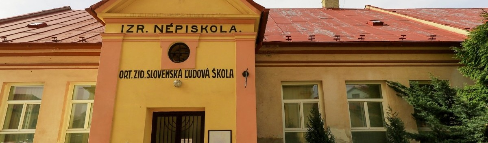

(1).jpg)
ORTODOXNÁ SYNAGÓGA
Ortodoxná synagóga je ústrednou budovou vo vzácnom komplexe rituálnych stavieb prešovskej ortodoxnej židovskej obce. Objekt postavila v rokoch 1897 – 1898 košická stavebná firma Kollacsek & Wirth. V deväťdesiatych rokoch 20. storočia prešla synagóga generálnou rekonštrukciou a dodnes slúži ako miesto židovských bohoslužieb. Na ženskej galérii je inštalovaná zbierka judaík Židovského múzea založeného v roku 1928. Vzácna zbierka nebola zničená počas vojny a do roku 1993 ju opatrovali v Štátnom židovskom múzeu v Prahe. Okrem synagógy zahŕňa unikátny areál židovskej obce objekty chasidského beit midrašu, rabinátu, rituálneho mäsiarstva, školy a kancelárie obce. V strede nádvoria stojí pamätník holokaustu.

SEFARDSKÁ SYNAGÓGA
Klaus-Synagóga v Prešove bola postavená v rokoch 1934/35 a je súčasťou historického areálu židovskej obce. Názov získala podľa konceptu “Klaus” a slúžila chassidskej komunite ako modlitebňa. Dnes sa v tejto pamiatkovej budove nachádzajú kancelárie, stále sú však viditeľné okrúhle okná s motívmi menorá a hebrejský nápis.

ORTODOXNÁ ŽIDOVSKÁ ŠKOLA
Ortodoxná židovská slovenská ľudová škola v Prešove bola postavená v medzivojnovom období ako súčasť suburbia. Slúžila na vzdelávanie detí ortodoxnej židovskej komunity. Bola plne začlenená v systéme vzdelávania medzivojnového školstva. Po vojne budova školy krátky čas slúžila ako štandardná základna škola mestského typu.
